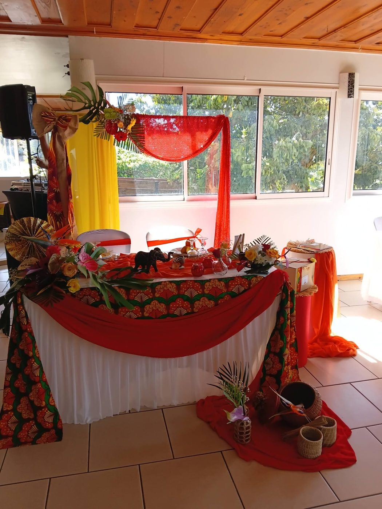
Décoration d'événements · Saint-Joseph
Des arches drapées, des tables fleuries, des couleurs qui chantent : votre fête prend forme, jusqu'au dernier détail doré.
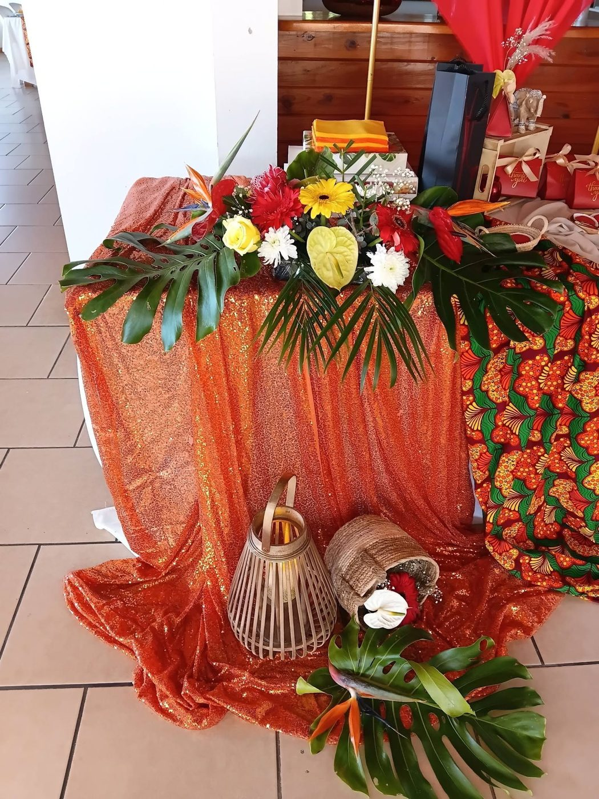
Organisatrice & décoratrice
Depuis 2021, Ti Rose Enchantée imagine et installe la décoration des grands moments, à Saint-Joseph et alentour : le drapé qui accueille, la table qui rassemble, la composition qui fait sourire en arrivant.
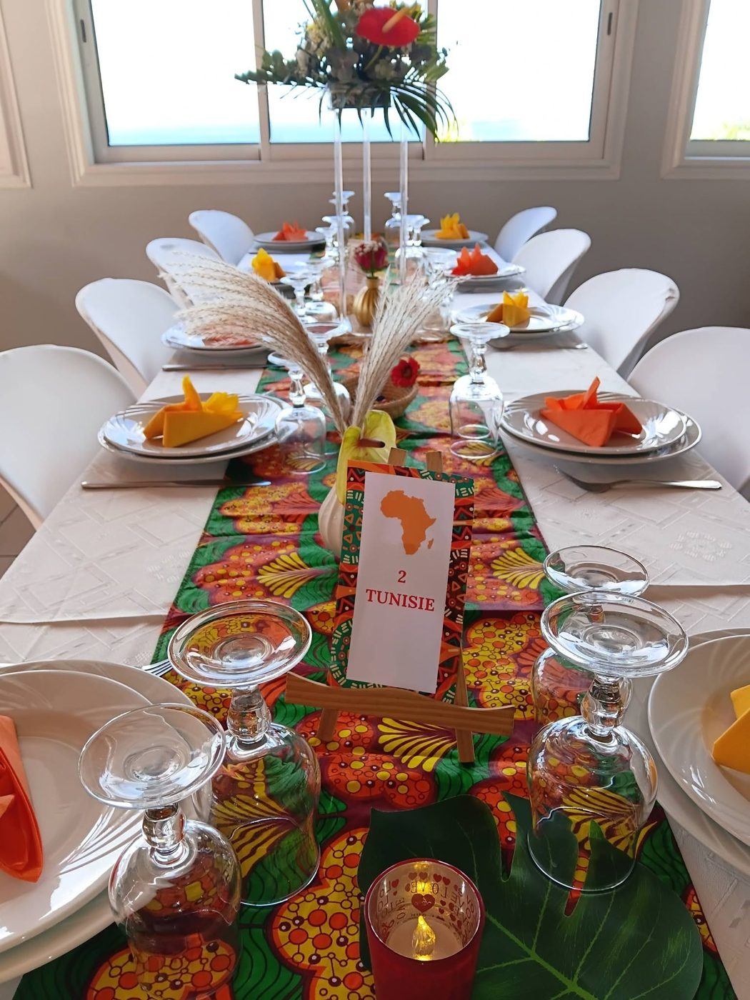
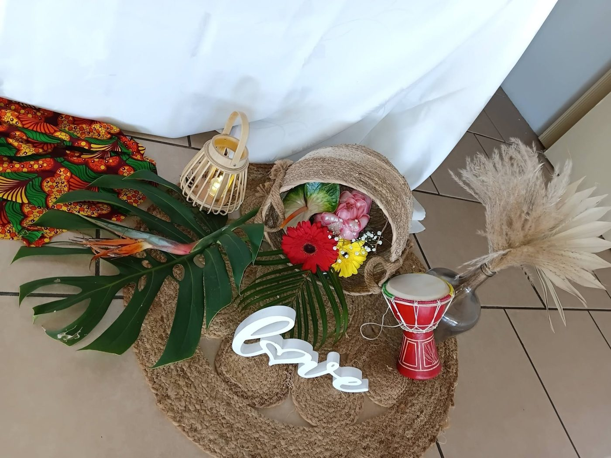
Trois humeurs, mille variantes
Chaque fête a sa couleur. En voici trois, tirées des dernières réalisations : on part de l'une d'elles ou on invente la vôtre.

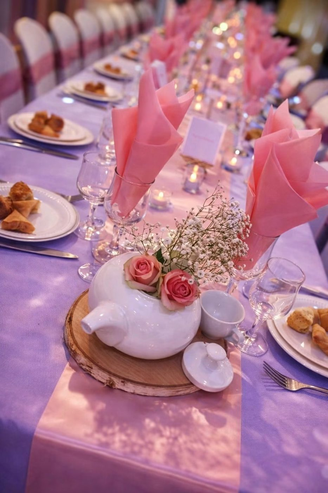
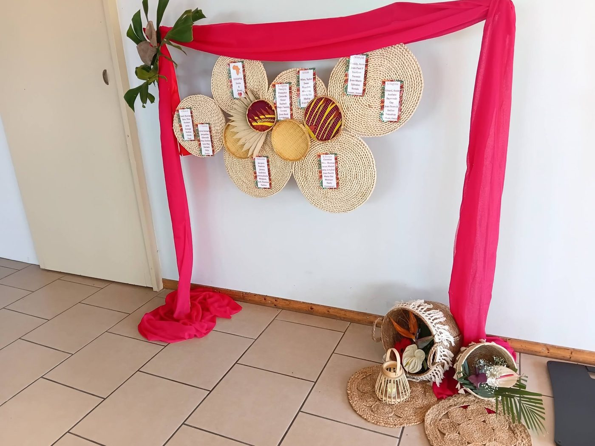
Réalisations
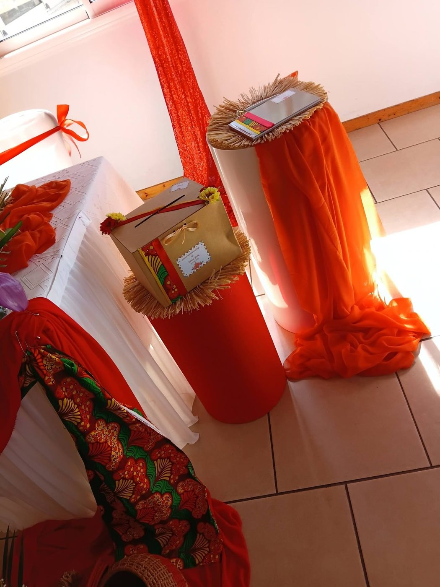
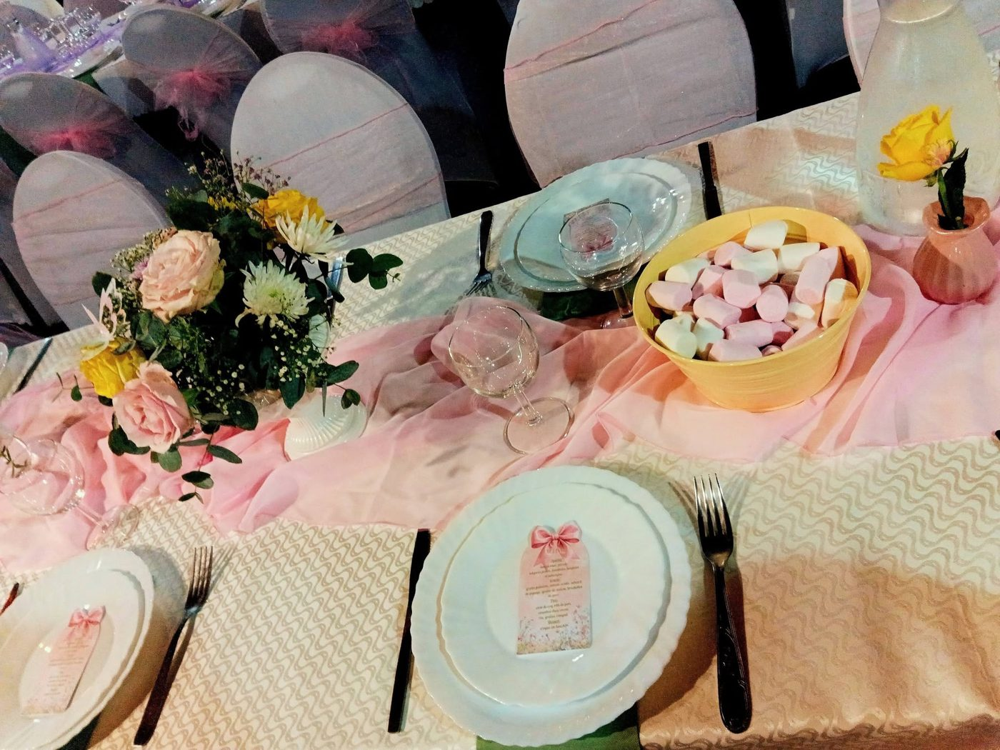
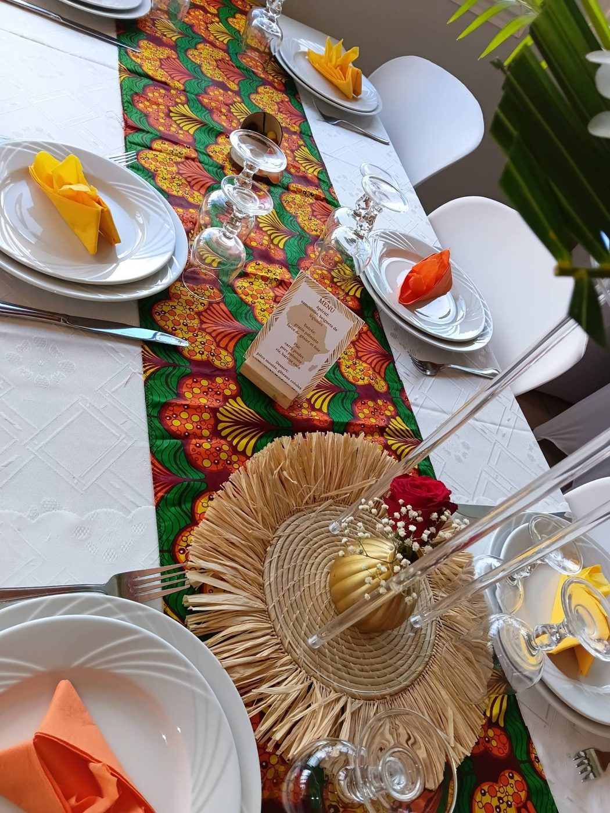
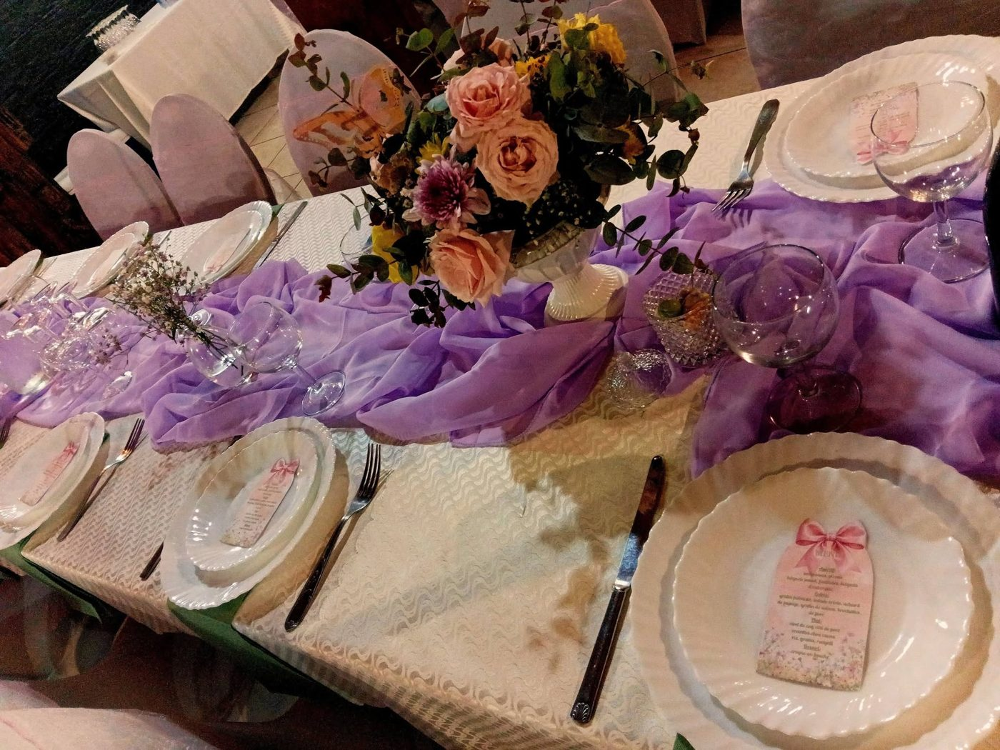
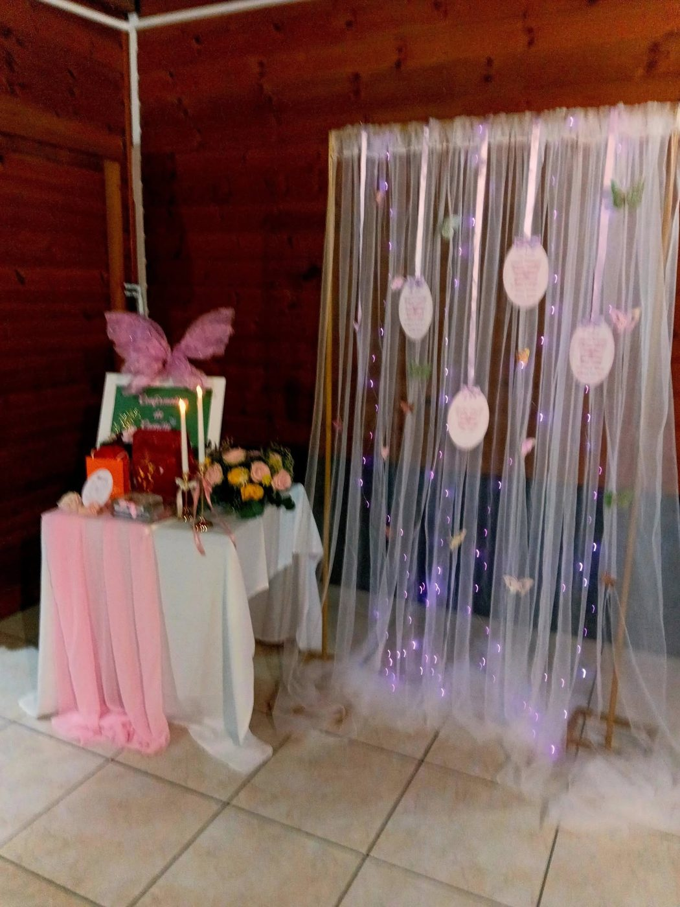
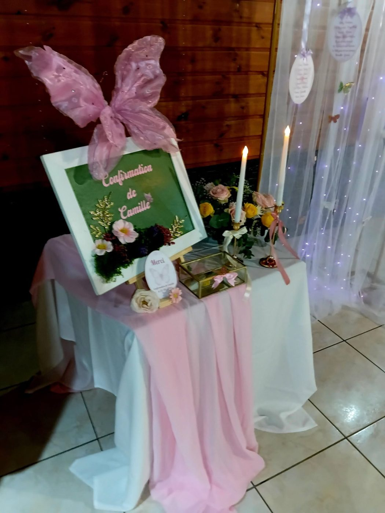
Votre projet
Quelques mots, et votre demande arrive toute prête sur le WhatsApp de Ti Rose Enchantée.
Ti Rose Enchantée vous répond directement sur WhatsApp.
Saint-Joseph, La Réunion
et alentour